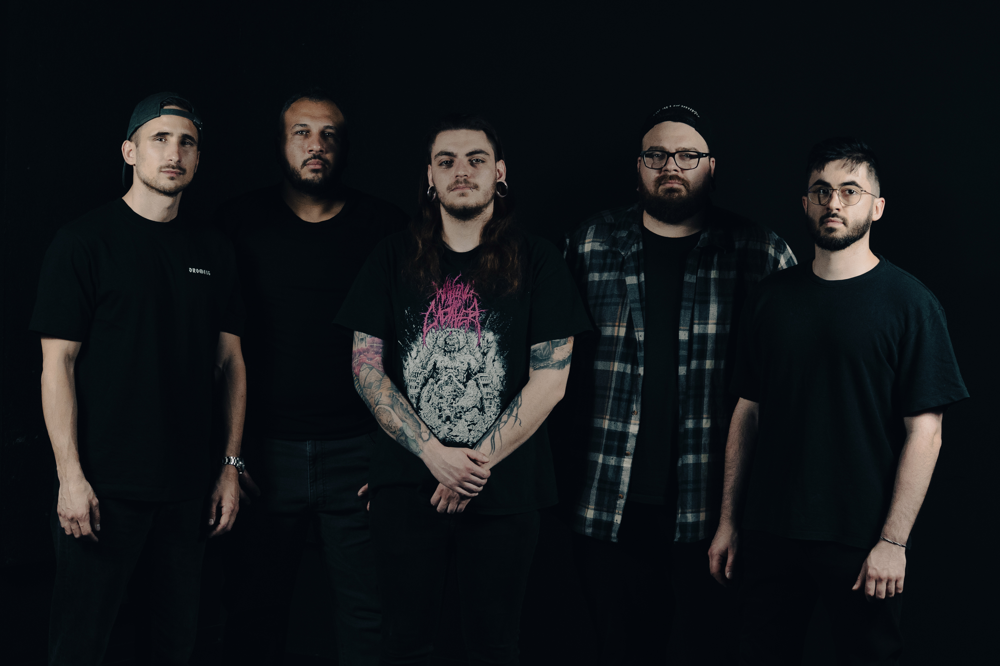
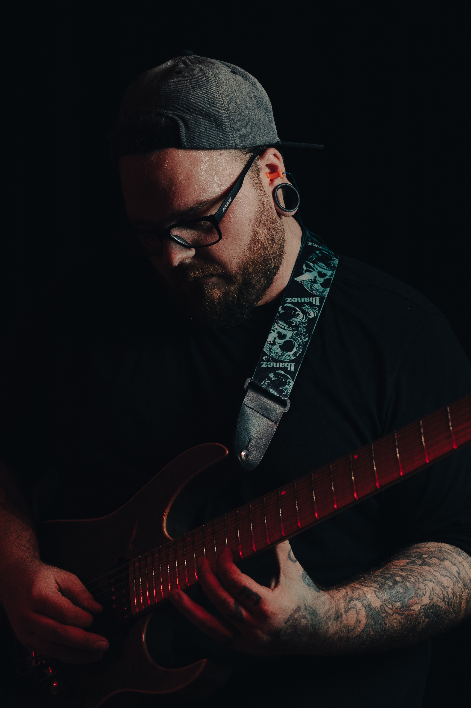
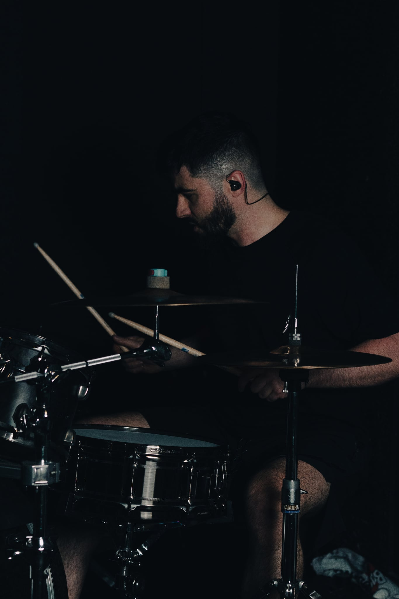
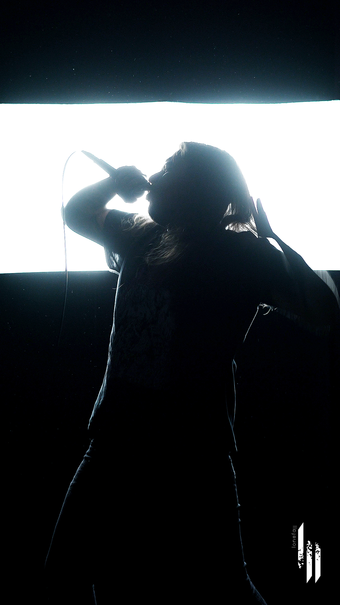
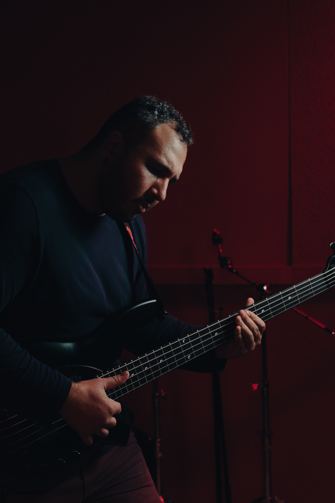
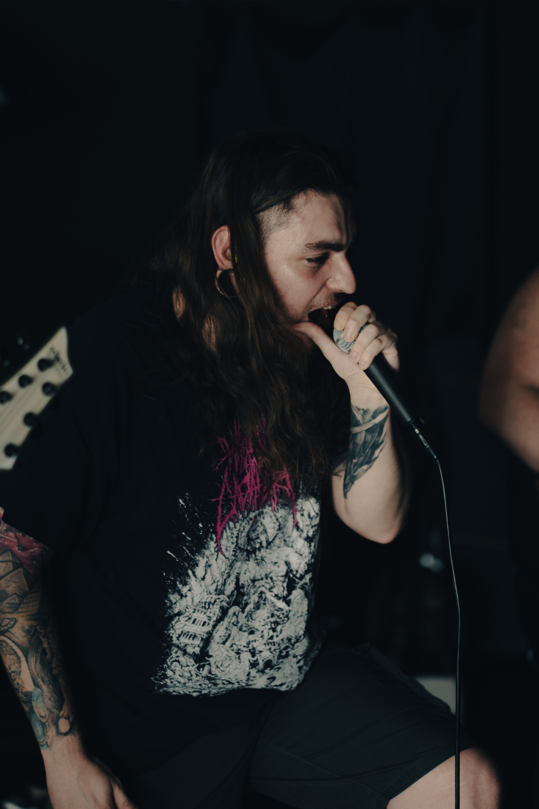

Originaire de Montpellier, LONEFALL est un quintet de metalcore moderne alliant puissance brute et atmosphères immersives.
Le groupe forge une identité sonore singulière en intégrant des instruments traditionnels japonais.
Guitare Raphael Lava
Basse Mathieu Boyer
Chant Kyle Michaux
Guitare Vincent Feger
Batterie Benjamin Privat
Photos




